library(fpp3)
library(mixtime) # Load last
# Use mixtime for the time index of each dataset
aus_production <- aus_production |>
mutate(Quarter = yearquarter(Quarter))
PBS <- PBS |>
mutate(Month = yearmonth(Month))
vic_elec <- vic_elec |>
mutate(Time = mixtime(Time))
pedestrian <- pedestrian |>
mutate(Date_Time = mixtime(Date_Time))
tourism <- tourism |>
mutate(Quarter = yearquarter(Quarter))Exploratory time series analysis
Seasons and calendrical patterns
30th November 2026 @ WOMBAT 2026
Mitchell O’Hara-Wild, Nectric
Setup
Restarted R? Catch up from the first session.


Visualising temporal patterns
The time plot allows us identify the presence of seasonality, but it is less effective in seeing the shape of seasonal patterns.
Question
How else could we represent time to more clearly show annual seasonal patterns?
Visualising seasonality
Looping the plot’s x-axis around each year arranges linear time (year month) cyclically (month of year), which highlights seasonal patterns.

How looping works
Monthly scripts in linear time.
Each month belongs to a year. Split the line between years.
Loop each year back to the start, one at a time.
The season plot: cyclical time.
December still connects to the next January.
Visualising seasonality
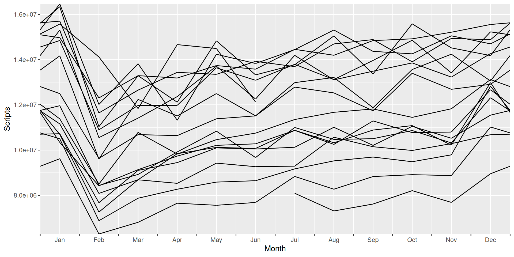
Exercise 9
Describe the shape of the seasonal pattern.
When are the most scripts (the peak) and the least scripts (the trough) issued?
Visualising seasonality
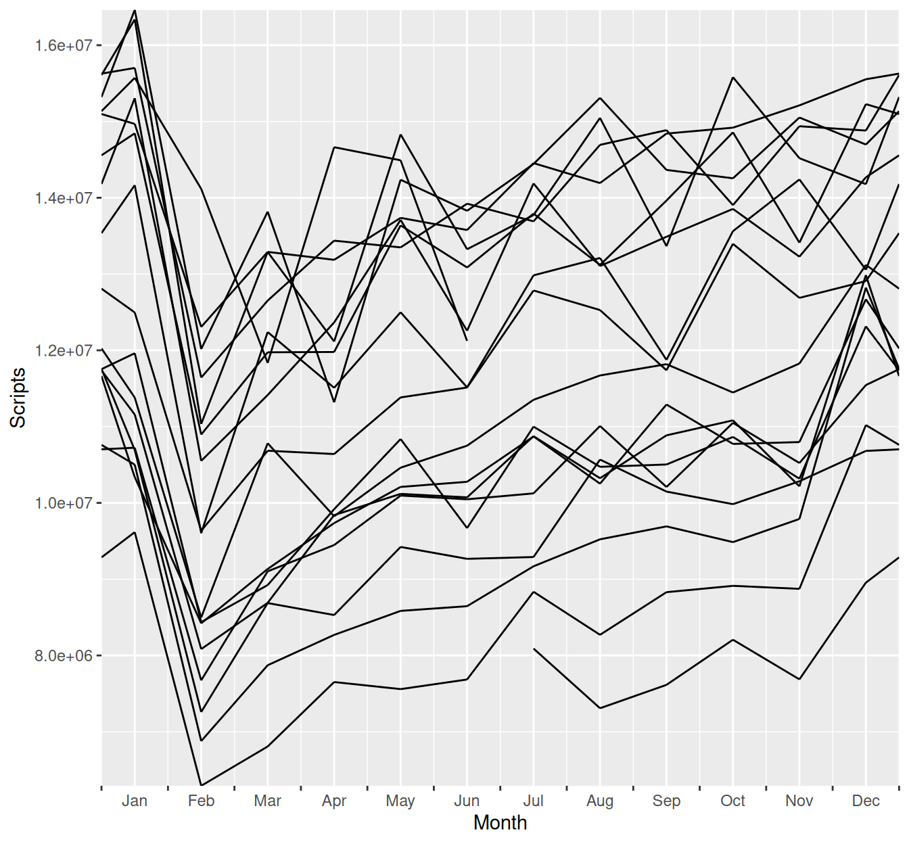
In which month are the fewest scripts usually issued?
- February
- June
- September
- December
Why loop time?
Without coord_loop(), the season plot needs seasonal factors.
Seasonal factors are error-prone
- the wrong
groupdraws sawtooth lines - December isn’t connected to January
- each month has equal length
xandgroupboth change with the season
The seasonal period
The period argument is a duration for the length of the data’s seasonal pattern.
It uses coord_loop(time_loops = period), so that the time axis loops around each year.
Other common seasonal periods include:
weeks(1L)days(1L)hours(1L)
What if the loop is the wrong length?
Why does 24 months also work? What about 6?
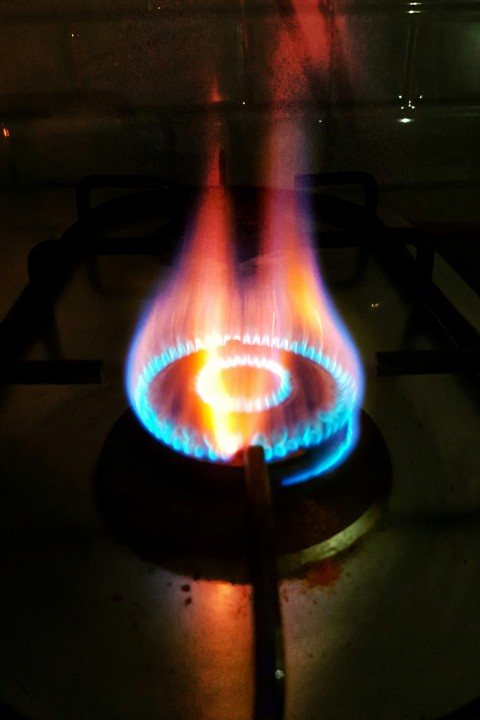
Visualising seasonality
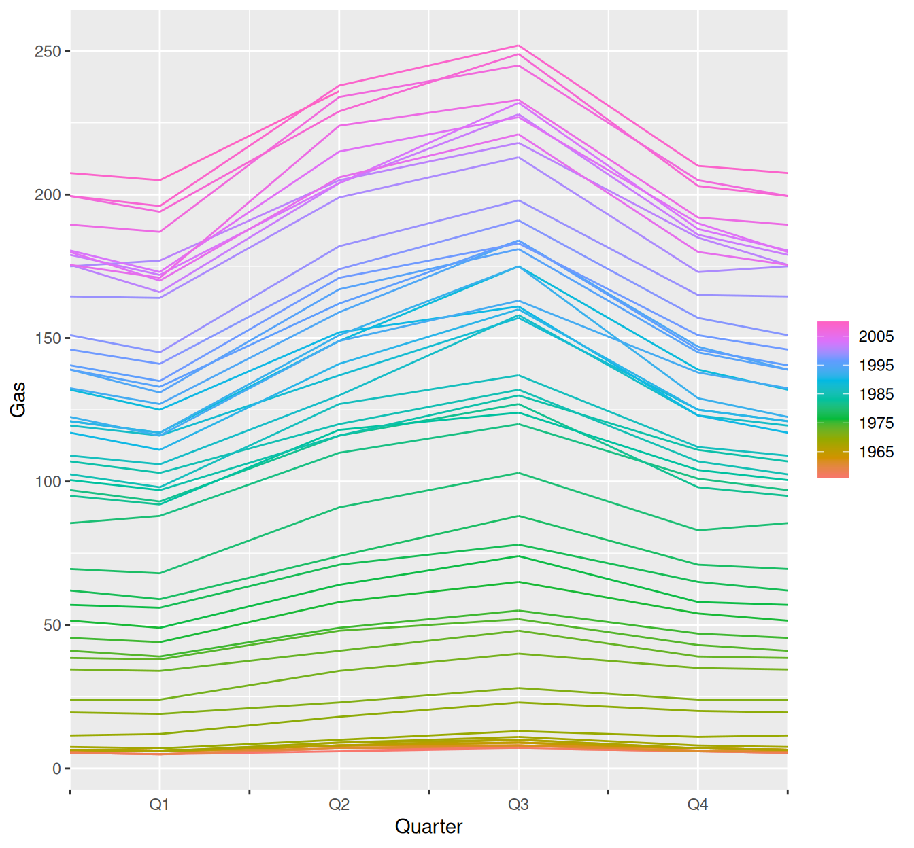
In which quarter does gas production peak?
- Q1
- Q2
- Q3
- Q4
Visualising seasonality
Describing the seasonal pattern
This plot shows that peak production is in Q3 with a trough in Q1. Seasonality is getting stronger recently.
Can we do better?
It’s hard to see the seasonality from the early data, how can we improve it?
Visualising seasonality
Plotting log transformed data
Recall that log transforming the data rescales multiplicative patterns into additive ones.
Can we do better?
The trend makes it difficult to compare across and within seasons, can we remove the trend?
Visualising seasonality
STL decomposition
Recall that STL allows us to separate trend from seasonality, let’s plot only the seasonal component.
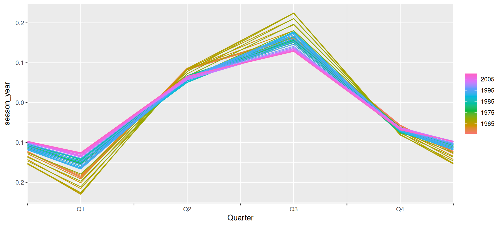
Plotting seasonality from decomposition
Removing the trend and noise allows us to clearly see the seasonal pattern, and even how it changes over time.
Can we do better?
How can we more clearly see the changes in the seasonal pattern over time?
Visualising seasonality
Remap the aesthetics
Swap the x and colour aesthetic mappings to plot linear time on the x-axis, with colours for each quarter.
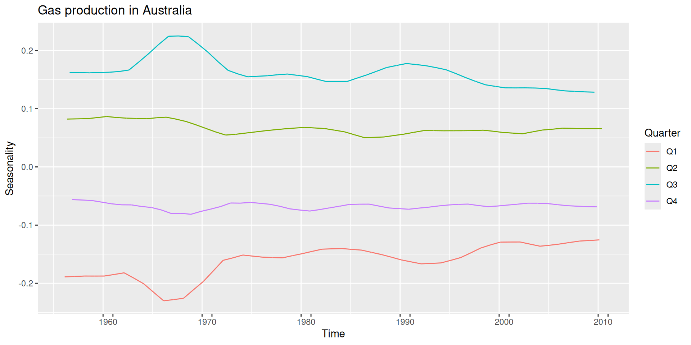
Gas production in Q1 is increasing while Q3 is decreasing.
From time plot to subseries plot
The seasonal component of log gas production.
Each observation belongs to a quarter.
Join observations from the same quarter: four subseries.
Place the subseries side by side to compare quarters.
Add the mean of each quarter: the seasonal subseries plot.
Visualising seasonality
Facet by season
A ‘seasonal sub-series plot’ shows changing seasonality.
The seasonal subseries plot
Seasonal decomposition advised
Seeing changes in seasonality when the data has trend, noise, and other patterns is tricky! This plot works best in combination with STL decomposition.

Changing seasonality
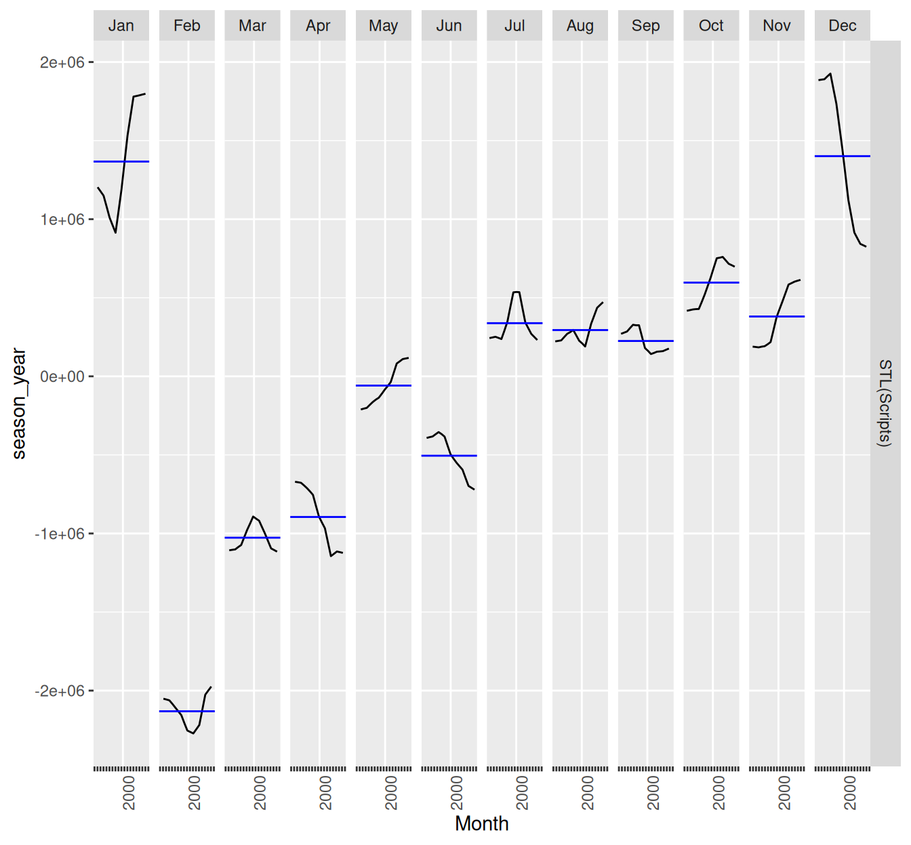
How is the December peak in scripts changing since the mid 1990s?
- Getting larger
- Getting smaller
- Staying the same
Recap of plotting time series
- Time plots
- Season plots (
coord_loop()) - Seasonal subseries plots
Complex seasonality
Complex seasonality describes two or more seasonal patterns.
Complex seasonal patterns:
- often interact with each-other
- can be based on other calendars (e.g. holidays)
Frequent seasonality
Multiple seasonality is common in daily & sub-daily data.
It can be difficult to forecast, so first consider if you need daily or sub-daily forecasts for making decisions.
Victorian electricity demand
Victorian electricity demand
Victorian electricity demand
Victorian electricity demand
Complex seasonality
There are three key strategies for clearly plotting multiple seasonal patterns:
Temporal aggregation
Sum over finer-grained seasonal patterns.
Useful for annual seasonality.
Calendar plots
Lay out time like a calendar.
Useful for holidays and sub-daily patterns.
Seasonal decomposition
Separate each seasonal pattern with MSTL (multiple STL).
Best for daily / weekly seasonality.
Temporal aggregation
The Victorian electricity demand data has three seasonal patterns:
- Annual (weather)
- Weekly (work)
- Daily (sleep)
Temporal aggregation
Aggregation to a weekly frequency will sum over the daily and weekly patterns.
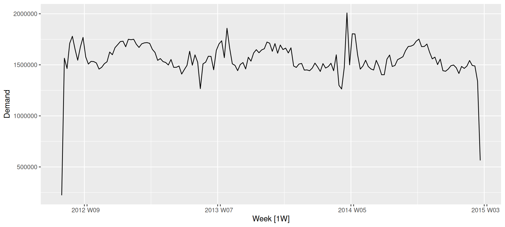
Question
The first and last weeks are incomplete. How did we keep only complete years in annual aggregation?
Temporal aggregation
vic_daily <- vic_elec |>
index_by(Day = date(Time)) |>
summarise(Demand = sum(Demand))
vic_weekly <- vic_daily |>
# Only days in weeks with all 7 days
filter(time_is_complete_at(Day, cal_isoweek$week)) |>
index_by(Week = yearweek(Day)) |>
summarise(Demand = sum(Demand))
vic_weekly |>
autoplot(Demand)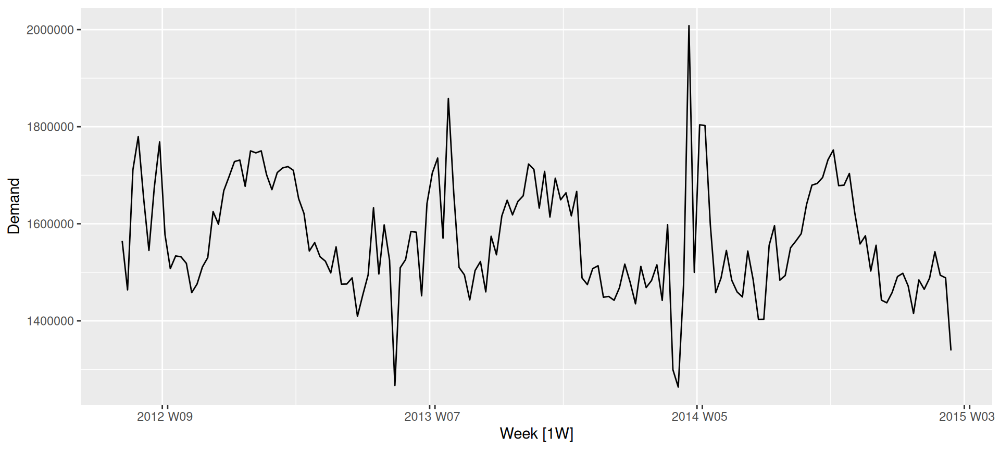
Temporal aggregation
pedestrian |>
filter(Sensor == "Southern Cross Station") |>
index_by(Day = date(Date_Time)) |>
summarise(Count = sum(Count)) |>
filter(time_is_complete_at(Day, cal_isoweek$week)) |>
index_by(Week = yearweek(Day)) |>
summarise(Count = sum(Count)) |>
gg_season(
Count,
period = years(1L, calendar = cal_isoweek)
)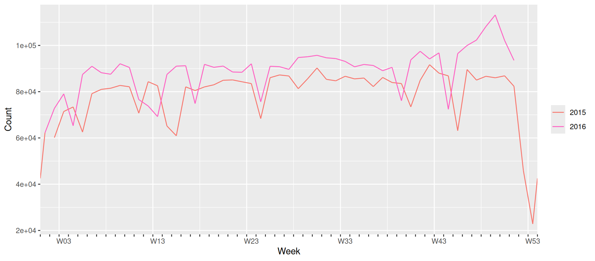
Temporal aggregation
Since there doesn’t appear to be (substantial) annual seasonality, we can use aggregation to look for weekly seasonality.
Time zones
Local time repeats when daylight saving ends.
<mixtime[2]>
[1] 2026-04-05 02:30:00 AEDT 2026-04-05 02:30:00 AESTAbsolute and local time
Sub-daily time is shown in absolute time.
Daylight saving ended at 3am on 1 April 2012.
Absolute and local time
Use tz = NA for local time, changes are dashed.
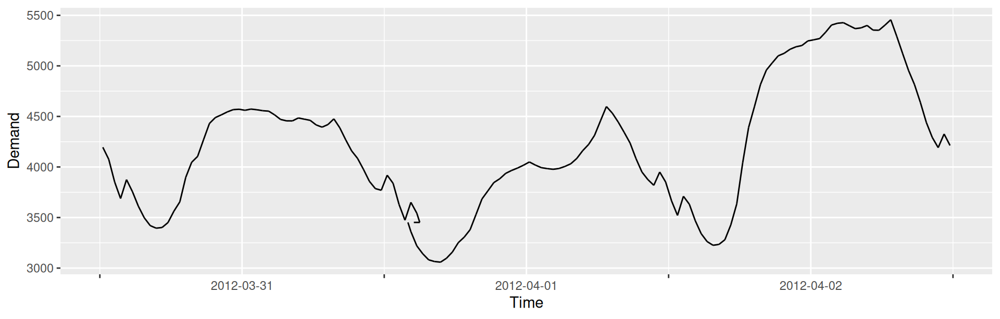
Local time aligns human behaviour, absolute time shows when events coincide.
Calendar plots
Using calendar layouts for time plots helps to visualise a large number of frequent (sub-daily) observations.
This is especially useful to show calendar specific patterns such as holidays.
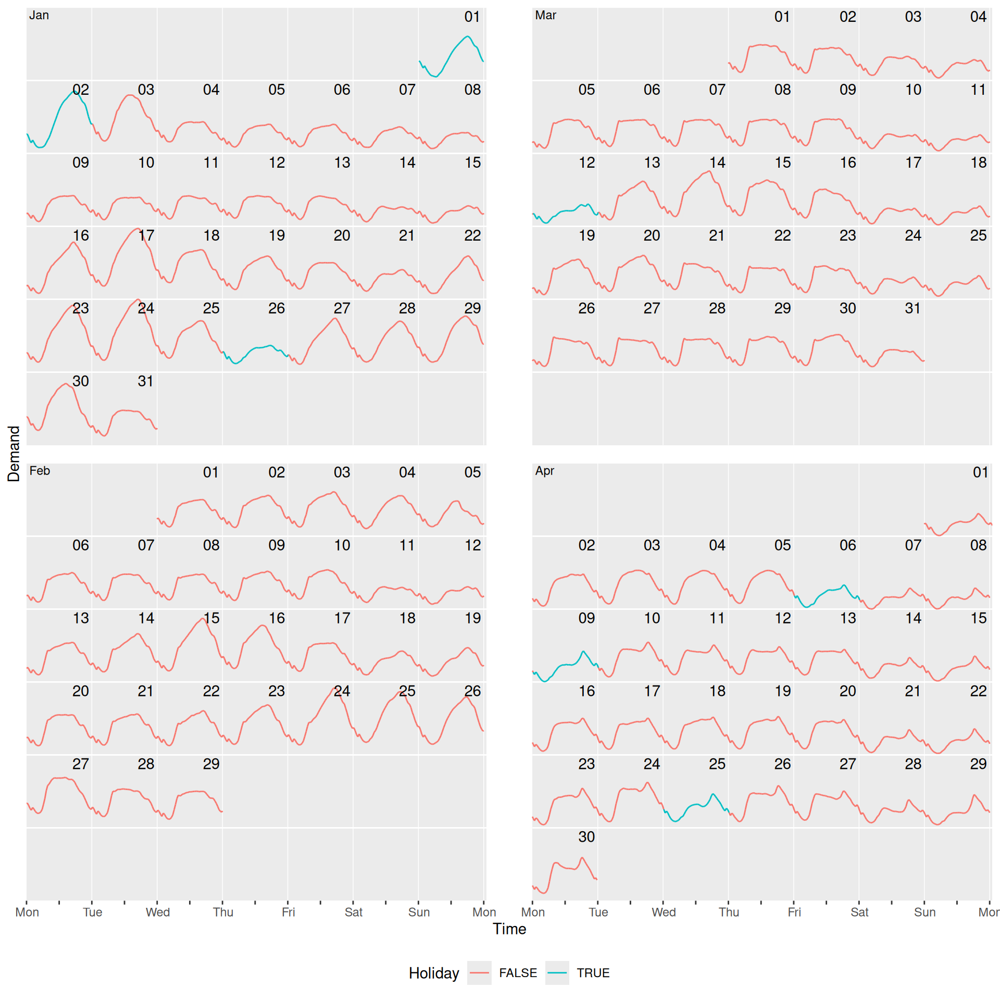
Calendar plots
Exercise 13
Create a calendar plot for the first few months of pedestrians at Southern Cross Station.
Here’s some code to get you started.
Can you see any holiday effects?
Calendar plots
pedestrian |>
filter(Sensor == "Southern Cross Station") |>
filter(
yearmonth(Date_Time) <= yearmonth("2015 Apr")
) |>
ggplot(aes(x = Date_Time, y = Count)) +
geom_time_line() +
coord_calendar(
rows = weeks(1L), cols = months(2L)
) +
scale_y_continuous(breaks = NULL) +
labs(x = "Time", y = "Pedestrian count")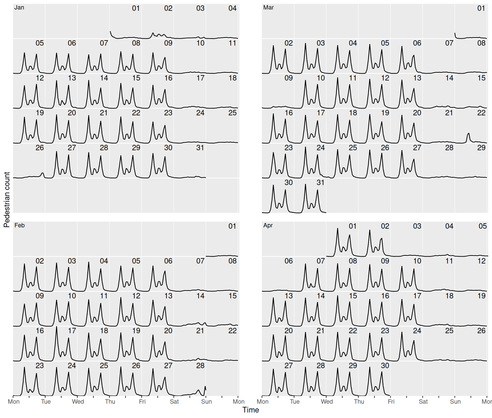
Seasonal decomposition
Specific combinations of seasonal patterns can also be computed and plotted.
Caution: model limitations
Recall the STL decomposition is additive, so interactions between different seasonality will not be captured. The seasonal components are only as accurate as the model.
Seasonal decomposition
Seasonal decomposition
Interaction effects
Combine interacting seasonalities, separated by colour or facets (e.g. weekdays and weekends).
ped_dcmp |>
as_tsibble() |>
mutate(
Weekday =
day_of_week(Date_Time) < day_of_week(6L)
) |>
ggplot(aes(
x = Date_Time, y = season_day + season_week,
colour = Weekday, group = 1
)) +
geom_time_line(alpha = 0.2) +
coord_loop(time_loops = days(1L)) +
scale_x_mixtime(
time_breaks = hours(6L),
time_labels = "{cyc(hour, day)}h"
)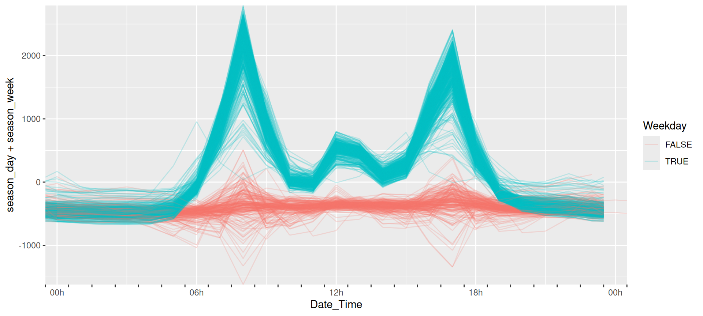
Exploring many series
Exercise 15
Use features to find an interesting series in tourism (e.g. strongly seasonal, or an unusual peak).
Plot its seasonality, then explain what you see.
Is the pattern changing over time?
Exploring many series
Which strongly seasonal series peak in Q2?
The Q2 peak (autumn, Easter?) is growing since 2010.
Q4 is weakening, and is now the trough.
Which tool for which question?
| Question | Tool |
|---|---|
| What patterns are there? | Time plot |
| What shape is the seasonality? | Season plot (coord_loop()) |
| Is the seasonality changing? | Seasonal subseries plot |
| Are holidays different? | Calendar plot |
| Is it trend or seasonality? | STL decomposition |
| Which series are interesting? | Features |
That’s all we have time for!
Learn more about forecasting
- Forecasting principles and practices textbook
Freely available online! https://otexts.com/fpp3/
I appreciate your feedback
Short feedback form: https://feedback.nectric.com.au/w0rw